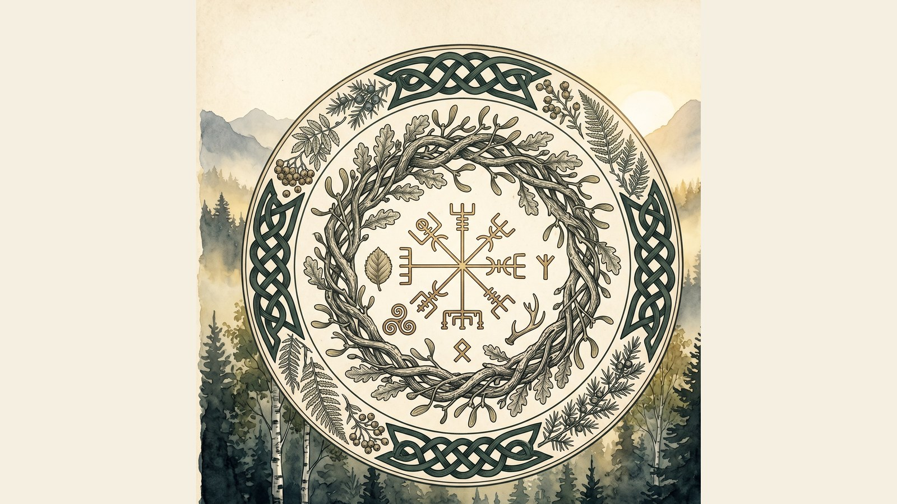
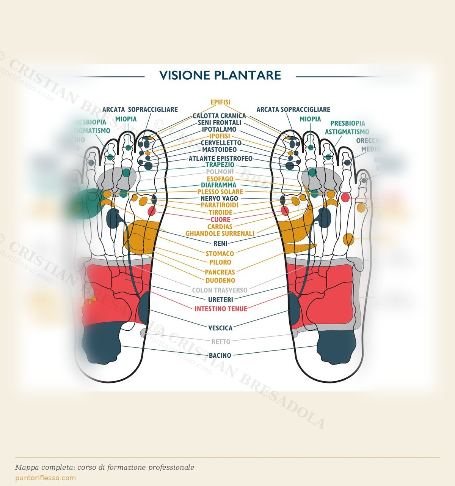

La rubrica di Cristian Bresadola
Naturopatia, fiori di Bach, fitoterapia, riflessologia. Saggezza Maya, idroterapia, tradizione e mito. Note dal mio percorso, scritte con la calma di chi non ha fretta di convincere.

"Mi farà male?" è la prima domanda che fanno quasi tutti. La risposta breve è no. La risposta più lunga richiede di spiegare cosa è davvero la riflessologia plantare, e cosa non è.
In parallelo
Iscriviti alla Bussola dell'Anima e ricevi ogni mattina alle 06:00 il kin maya del giorno. Asciutto, breve, gratuito.
Scopri la Bussola →